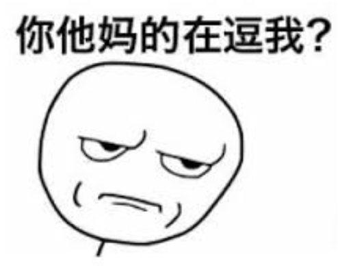
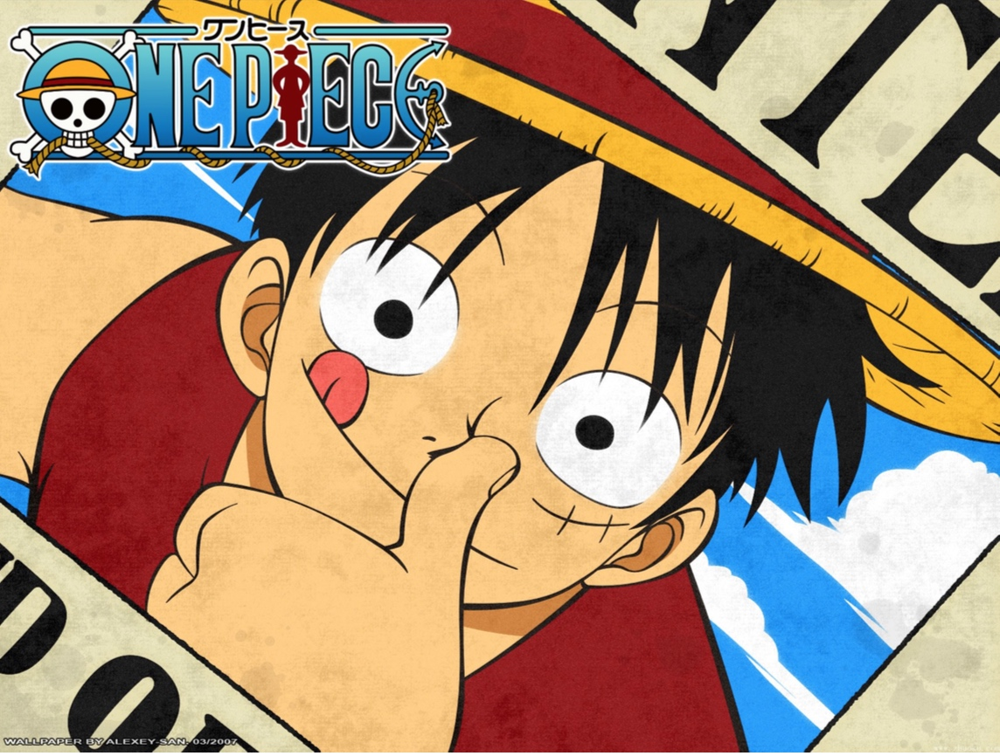

做产品的职位已经一年有余，这篇文章是我做产品半年的时候写的，写这篇文章的目的主要是为了回答这样一个问题：”产品经理究竟是干什么的？”，关于这个问题，最近半年又有了一些新的思考，便翻出来修改修改与大家分享一下。
产品经理究竟是什么？
2010年，伟大的苏杰老师出了下面的这本书
 

自此以后，似乎这个工种就好像变成了人人都可以做的职位，所有大学里混了几年理工科看代码还像看无字天书的应届生们，发现了这本书以后，那种感觉仿佛是看到了……
 

几乎所有的应届生都会抠着产品上的一个小小的细节，指点江山、激扬文字，满面红光的说：”我的偶像是乔布斯，我看过的书很多，比如说人人都是产品经理，我每天都关注业内信息比如说36kr……”。
 

什么是ABtest?除了乔布斯和张小龙以外，你还知道哪些知名的产品经理？除了36kr以外，你还知道哪些科技网站？问完这些，一般表情都会变成

好吧，我们问点简单的，《人人都是产品经理》说了点什么？场面突然就变成了这样：
 

当时我整个人都不好了……
 

产品的生命周期
说到产品经理，我们就不得不从一个产品的生命周期开始说起:
任何一个产品的生命周期都是这样：产品的规划——产品的设计——产品的研发——产品的运营
 

产品经理的作用在于整个产品研发团队内的作用在于，整合所有的资源，让所有的人沿着一个正确的道路前进。
一般来说，产品规划的过程是这样的：
 

产品的设计的时候是这样的：
 

产品的研发时候是这样的：
 

产品刚上线运营的时候是这样的：
 

产品改进的时候是这样的：
 

简单总结一下，如果这个事情做成了，可能会有你的一份功劳，但是如果做失败了，就都是你的错。一个产品的生命周期中，产品经理必须在所有的过程中扮演策略制定者的角色，当一个公司很小的时候，可能，产品经理，既得自己制定策略，也得自己执行任务。如果事情做的不好的话，结果可能就是这样
 

产品工作的重点
说完产品工作的主要过程，我们来聊一下产品工作的重点。
1、制定策略
商场如战场，每时每刻都需要做出各种各样的决定，一旦一个关键的决策出现错误，一个产品就这么完蛋了，做正确的决策，这是一个产品最终能活下来最重要的一点
 

2、与所有人搞好关系
由于大部分产品都是一个一行代码都写不了的渣渣,而且产品的主要工作也不是写代码,所以,作为一个产品,最重要的资源是什么? 有人得给你干活啊,所以作为一个产品最重要的是:搞好和RD哥哥们的关系! 诀窍就是:必要时可以牺牲自己可以支配的任何资源,如下图。
 

3、画大饼
要想人帮你干活,有资源还不够。还要整个团队在一起,目标明确才能赢。最重要的是,你的饼不应该是个垃圾,而且你至少得在逻辑上证明,为什么你的饼是饼,而不是翔?
通俗的说就是:未来的饼,一定要画的很大,而且得是个好饼,以后大了大家都能吃,而且现在还得有的吃
这方面来说,大饼画的最好的,某过于这个要成为海贼王的男人了……

4、Dirty Work
作为一个成天光动嘴皮子而不写代码的人,要有这种觉悟,就是:永远不要给别人添麻烦,要给别人实打实的减轻负担。怎么说呢,就是不要让别人帮你试错,事情得需要首先自己思考清楚,再让其他兄弟们帮忙去干,所谓:“大胆假设,小心求证”不要让别人一看到你就想到这两个字:
 

快速迭代不应该成为不进行思考瞎折腾的理由和借口，要知道，我们的研发可是非常非常贵的！Dirty Work是如此的重要,以至于我觉得,作为一个产品,就应该去做所有自己能力范围之内的DirtyWork.
参考
本文图片全部来自网络，如有版权问题请联系我。